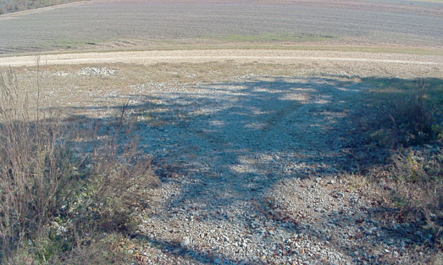

Which segmentation models are safe enough—and fast enough—for off-road autonomy?
Nine segmentation architectures, three controlled seeds, and 133.7 million test-pixel decisions. Compare accuracy with the errors that matter in motion: false-safe pixels can admit obstacles, while false-block pixels can stop a viable route. Deployment results cover RTX 5060, H100, and Ryzen CPU hardware.
Core Research Discoveries
Key empirical conclusions established by the verified ledger and controlled experiments.
FPN/EfficientNet-B0 Outperforms 5x Larger Models
Reaches top test accuracy of 0.9423 mIoU (+1.07 pp gain under convergence scheduling) and the lowest False-Safe Rate (2.55%), outperforming the heavy 29.1M parameter ROD ViT-S SAM baseline while using only 5.76M parameters.
PIDNet-S Achieves 1038 FPS with TensorRT
Under FP16-enabled mixed-precision TensorRT 10 on the RTX 5060 edge GPU, PIDNet-S executes its device/forward scope in 0.96 ms (1038 FPS). Its measured pipeline reaches 9.40 ms (106 FPS), excluding camera, planning, and control.
ROD ViT-S Cost-Accuracy Asymmetry
ROD ViT-S (frozen EfficientSAM) reaches 0.9331 mIoU, but its 21.8 FPS H100 throughput is about 12.4 times lower than PIDNet-S under the shared eager-FP32 protocol. It therefore falls outside the observed H100 accuracy–speed frontier for this dataset and recipe.
Why False-Safe Rate (FSR) Governs Autonomy
Standard mIoU masks critical safety failures. An autonomous vehicle mistaking a trench or boulder for safe path (False-Safe) risks collision or rollover, whereas over-conservatively flagging traversable terrain (False-Block) causes an unnecessary stop or re-planning event.
The 9 Evaluated Architectures
Classified across Real-Time CNNs, Lightweight Encoder-Decoders, and Foundation Transformers.
Comprehensive Benchmark Leaderboard
All population statistics are mean ± standard deviation across identical seeds 1337, 2027, and 4242.
| # | Model Architecture | Family | Params | Epochs / Budget | Test mIoU ▼ | Traversable F1 | False-Safe (FSR) ↓ | False-Block (FBR) ↓ | Gain (15e Δ) | H100 FPS | Details |
|---|
Visual Analytics & Pareto Frontiers
Interactive multi-dimensional evaluation of Speed vs Accuracy, Safety vs Availability, and Convergence Trajectories.
Speed vs Accuracy Pareto Frontier
Measured H100 eager throughput paired with the corresponding Blue + Green test checkpoint.
Asymmetric Error Space: FSR vs FBR
False-Safe Rate (X) vs False-Block Rate (Y). Lower & left is optimal.
Convergence Schedule Gain over 15 Epochs
mIoU delta (+pp) achieved by early stopping + cosine schedule.
Convergence Suite: Validation mIoU Across 300 Epochs
Real training trajectories under patience 25 early stopping for seed 1337.
Interactive Mask Split Inspector
Drag the vertical divider handle to inspect raw camera RGB against ground-truth and model prediction overlays in real time.

Qualitative Review Gallery
Curated failure modes, percentile slices, field-robot sequences, and the test images packaged with this visualizer.
Edge Hardware Deployment Lab
Real measured latencies, FPS throughput, and memory allocation across Cloud GPU, Edge GPU, and Robot Embedded CPU.
NVIDIA H100 NVL MIG
Cloud / Server GPU BaselineNVIDIA GeForce RTX 5060
Embedded Autonomous Rover GPUAMD Ryzen 5 5500
Low-Power Robot Embedded CPURTX 5060 TensorRT Measurements
FP16-enabled mixed-precision TensorRT 10.16 measurements at batch one and 640 × 384 external input, with full-test accuracy verification.
PIDNet-S on RTX 5060
106.43 Pipeline FPSROD ViT-S on RTX 5060
39.38 Pipeline FPSMeasured Pipeline Within a 30 FPS Frame Budget
The coloured portion is measured; the remainder is unallocated time, not a measurement of camera, planning, or control.
Both measurements exclude disk decode, camera-driver latency, visualisation, planning, actuation, and one-time engine construction.
Thesis Conceptual Diagrams & Explanations
Visual theory figures from Chapter 1 through Chapter 7 illustrating dataset partitioning, depthwise convolutions, frozen SAM adaptation, and the safety evidence ladder.